Space-time dual
Hadamard lattices
Operator dynamics and entanglement
October 4, 2024
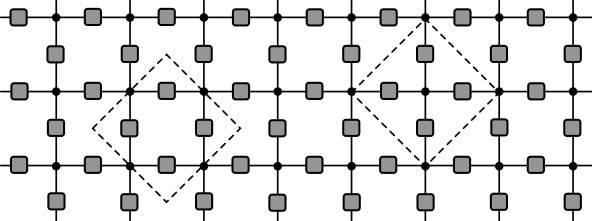
U = \mathcal{N}\sum_{z_i\in \mathbb{Z}_q}\prod_{\braket{i,j}} u_{ij}(z_i, z_j)
u_{ij}(z_i, z_j): \mathbb{Z}_q\times \mathbb{Z}_q\longrightarrow U(1)
Rank 2 tensors u_{ij} on bonds
Rank 4 tensors \delta_{z_1,z_2,z_3,z_4} at the vertices
\delta_{z_1,z_2,\ldots ,z_p} = \begin{cases} 1 & z_1=z_2=\cdots =z_p \\ 0 & \text{otherwise} \end{cases}
Fix values of z_{x,t} on bottom and top z_{x,0} and z_{x,T} for x=1,\ldots N
When does partition function U(z_{1:N,0},z_{1:N,T}) give matrix elements of unitary operator on a system of N qudits?
Gives rise to conditions on u_{ij}…
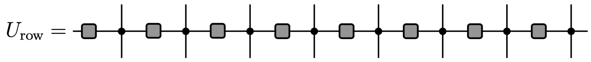
\braket{z_{1:N}|U_{\text{row}}|z_{1:N,t}} = \prod_{x=1}^N u_\text{H}(z_{x,t},z_{x+1,t})
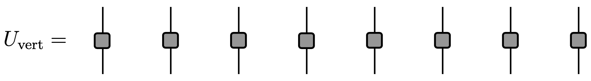
Require that u_\text{V} is unitary too, up to multiplicative factor
u_\text{V}^\dagger u^{\vphantom{\dagger}}_\text{V}=q\mathbb{1} with |u_{\text{V}ij}|=1 is complex Hadamard matrix
Simple and important example is Fourier matrix
\left(F_q\right)_{jk} = \exp\left(2\pi ijk/q\right)\qquad j,k=0,\ldots, q-1.
U(z_{1:N,0},z_{1:N,T})\propto\braket{z_{1:N,T}|\left(U_\text{vert}U_\text{row}\right)^T|z_{1:N,0}}
Evaluate TN from left to right instead of from top to bottom
Space-like evolution is unitary if u_\text{H} is Hadamard
If both u_\text{V} and u_\text{H} are Hadamard model describes unitary evolution in both space and time: space-time duality
U_{\text{row}} = e^{-i H_1 T_1}, \qquad U_{\text{vert}} = e^{-i H_2 T_2}
H_1 a sum of diagonal terms acting on two neighbouring qudits: classical Ising-like interaction
H_2 a sum of single qudit terms: a “kick” creating quantum superposition
H_{1,2} must be chosen so that matrix elements of corresponding unitaries have unit modulus
Examples include self-dual kicked Ising model and kicked Potts model (later)
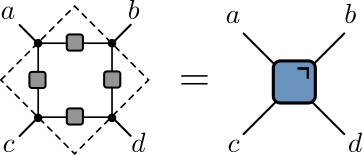
Vertices now rank 3 delta tensors
Brickwork dual unitary circuit from Hadamard condition
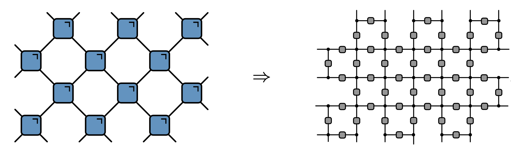
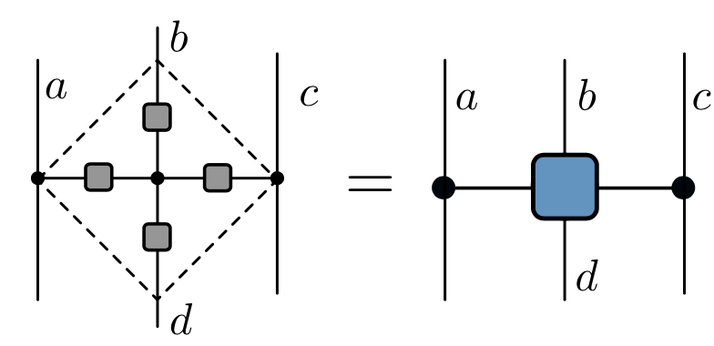
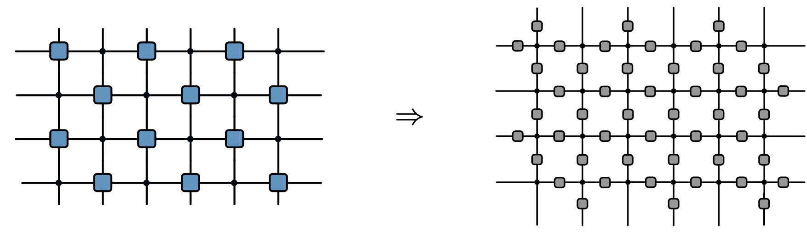
\sum_{e=0}^{q-1} (F^{\dagger}_d)_{ae} \left(F_d\right)_{be}(F_d^{\dagger})_{ce}\left(F_d\right)_{de} = q\, \delta_{-a+b-c+d \mod q},
\begin{align*} s_{x-1,t} = a \qquad s_{x,t+1} = b \nonumber\\ s_{x+1,t} = c \qquad s_{x,t-1} = d \end{align*}
s_{x,t+1} = - s_{x-1,t} - s_{x+1, t} + s_{x,t-1} \qquad \mod q
Operator dynamics in Clifford cat maps
Entanglement growth
Long-range entanglement generation
Operator dynamics in Clifford cat maps
Entanglement growth
Long-range entanglement generation
Z_q = \begin{pmatrix} 1 & 0 & 0 & \cdots & 0\\ 0 & \omega_q & 0 & \cdots & 0\\ \cdots & \cdots & \cdots & \cdots & \cdots \\ 0 & 0 & 0 & \cdots & \omega_q^{q-1} \end{pmatrix},\qquad X_q = \begin{pmatrix} 0 & 1 & 0 & \cdots & 0\\ 0 & 0 & 1 & \cdots & 0\\ \cdots & \cdots & \cdots & \cdots & \cdots \\ 1 & 0 & 0 & \cdots & 0 \end{pmatrix} (\omega_q = \exp(2\pi i/q))
X_q Z_q = \omega_q Z_q X_q
Z\ket{z}_Z=\omega^z\ket{z}_Z\qquad X\ket{x}_X=\omega^x\ket{x}_X,\qquad z,x\in \mathbb{Z}_q
\ket{x}_X = \frac{1}{\sqrt{q}}\sum_{z=0}^{q-1} \omega^{zx}\ket{z}_Z, \qquad \ket{z}_Z = \frac{1}{\sqrt{q}}\sum_{x=0}^{q-1} \omega^{-zx}\ket{x}_X
FZF^\dagger =X ,\qquad FXF^\dagger = Z^{-1}
\left(Z^a X^b\right)_{jk} = \omega^{aj}\delta_{j+b=k\mod q}
F Z^a X^b F^\dagger = X^{a}Z^{-b}
Z^k Z^a X^b Z^{\dagger k} = Z^a X^b \omega^{-bk}
S_{jj} = \exp(-i\pi j^2/q)\qquad j\in\mathbb{Z}_q
S^\alpha Z^a X^b (S^\dagger)^\alpha = \omega^{\alpha b^2/2} Z^{a+\alpha b}X^b
\begin{pmatrix} z \\ x \end{pmatrix}\longrightarrow \begin{pmatrix} z' \\ x' \end{pmatrix} = \begin{pmatrix} z \\ x + \alpha z \end{pmatrix}= \begin{pmatrix} 1 & 0 \\ \alpha & 1 \end{pmatrix} \begin{pmatrix} z \\ x \end{pmatrix}\qquad \mod q
Semiclassical interpretation: multiplying by e^{i\theta(z)} shifts momentum by \theta'(z)
Shift linear in z \longrightarrow \theta(z)\propto z^2
C_{jk}(\alpha,\delta)\equiv\left(S^\alpha F S^\delta\right)_{jk} = \exp\left(-\frac{2\pi i}{q}\left[\frac{\alpha j^2}{2} - jk + \frac{\delta k^2}{2}\right]\right)\qquad \alpha,\delta\in \mathbb{Z}
Z^a X^b \longrightarrow C(\alpha,\delta)Z^a X^b C^\dagger(\alpha,\delta)\sim Z^{a'}X^{b'}
\begin{pmatrix} a' \\ b' \end{pmatrix} =\overbrace{\begin{pmatrix} \alpha & \alpha\delta - 1\\ 1 & \delta \end{pmatrix}}^{\equiv T^T} \begin{pmatrix} a \\ b \end{pmatrix}.
\begin{pmatrix} z \\ x \end{pmatrix}\longrightarrow \begin{pmatrix} z' \\ x' \end{pmatrix} = T \begin{pmatrix} z \\ x \end{pmatrix}\qquad \mod 1
T = \begin{pmatrix} \alpha & \beta \\ \gamma & \delta \end{pmatrix}\qquad \alpha,\beta,\gamma,\delta\in\mathbb{Z},\qquad \alpha\delta-\beta\gamma=1
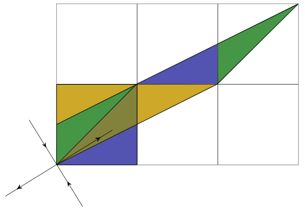
\left(U_q\right)_{jk}= \frac{1}{\sqrt{q}} \exp \left[\frac{2 \pi i}{q \beta}\left(\frac{\alpha j^{2}}{2}+j k+\frac{\delta k^2}{2}\right)+\frac{i \kappa q}{2 \pi} \sin \left(\frac{2 \pi j}{q}\right)\right]
C_2(\alpha,\delta) = \operatorname{diag}(C_{j_1j_2}(\alpha,\delta)) \qquad j_{1,2}\in\mathbb{Z}_q
C_2(\alpha,\delta)Z_1^{a_1} X_1^{b_1} Z_2^{a_2} X_2^{b_2} C^\dagger_2(\alpha,\delta) \sim Z_1^{a_1-\alpha b_1-b_2}X_1^{b_1}Z_2^{a_2-\delta b_2-b_1}X_2^{b_2}
\begin{align*} z_1&\longrightarrow z_1 \nonumber\\ x_1&\longrightarrow x_1 - z_2 - \alpha z_1\nonumber\\ z_2&\longrightarrow z_2 \nonumber\\ x_2&\longrightarrow x_2 - z_1 - \delta z_2 \end{align*}
\mathcal{O}_{AB}\equiv\prod_{x=1}^N Z_x^{a_{x}}X_x^{b_{x}}\qquad a_{x}, b_{x}\in \mathbb{Z}_q
Dynamics is u_\text{H}=F=C(0,0) and u_\text{V}=C(\alpha,\delta) \begin{align*} a_{x,t+1} &= \alpha(a_{x,t}-b_{x-1,t}-b_{x+1,t}) + (\alpha\delta -1)b_{x,t}\\ b_{x,t+1} &= a_{x,t} - b_{x-1,t} - b_{x+1,t}+\delta b_{x,t} \end{align*} \mod q
“Hamiltonian” form: first order difference equations
Eliminate a_{x,t} to obtain second difference “Lagrangian” form
\begin{aligned} \left[\Delta b\right]_{x,t} &= (\alpha + \delta - 4)b_{x,t}\\ \left[\Delta b\right]_{x,t} &\equiv b_{x,t+1} + b_{x+1,t-1} + b_{x+1,t} + b_{x-1,t} - 4b_{x,t} \end{aligned}\mod q
\begin{align*} a_{x,t+1} &= \alpha(a_{x,t}+b_{x-1,t}+b_{x+1,t}) + (\alpha\delta -1)b_{x,t}\\ b_{x,t+1} &= a_{x,t} + b_{x-1,t} + b_{x+1,t}+\delta b_{x,t}\\ \left[\square b\right]_{x,t} &= (\alpha + \delta)b_{x,t}\\ \left[\square b\right]_{x,t} &\equiv b_{x,t+1} + b_{x+1,t-1} - b_{x+1,t} - b_{x-1,t} \end{align*}\mod q
Dynamics related by a_{x,t}\rightarrow (-1)^x a_{x,t}, and b_{x,t}\rightarrow (-1)^x b_{x,t}
Linear equations \longrightarrow suffices to understand dynamics of single Z and X
These are Clifford cellular automata1
Classical version is coupled cat model2
\begin{pmatrix} a_{t+1}(u) \\ b_{t+1}(u) \end{pmatrix} = M(u,u^{-1}) \begin{pmatrix} a_{t}(u) \\ b_{t}(u) \end{pmatrix}
M(u, u^{-1}) = \begin{pmatrix} \alpha & (\alpha\delta - 1) + \alpha(u + u^{-1}) \\ 1 & \delta + u + u^{-1} \end{pmatrix}
\operatorname{tr}M = \alpha + \delta + u + u^{-1}
For \alpha+\delta=0 we have a glider automaton1
\alpha+\delta\neq 0 gives fractal operator dynamics
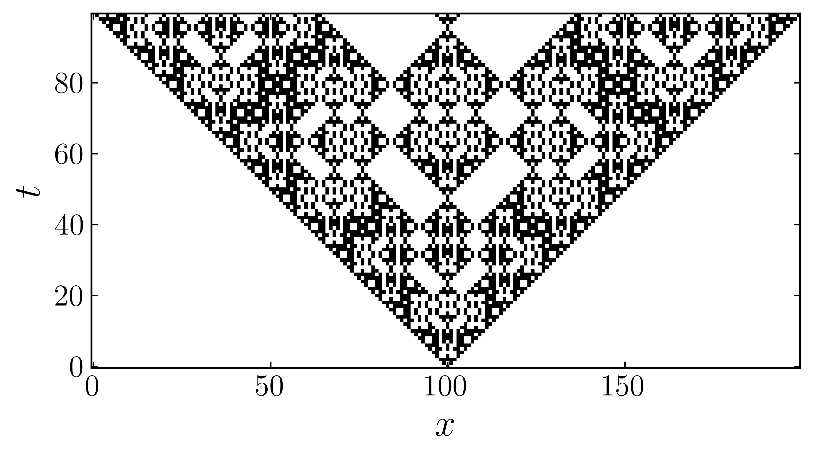
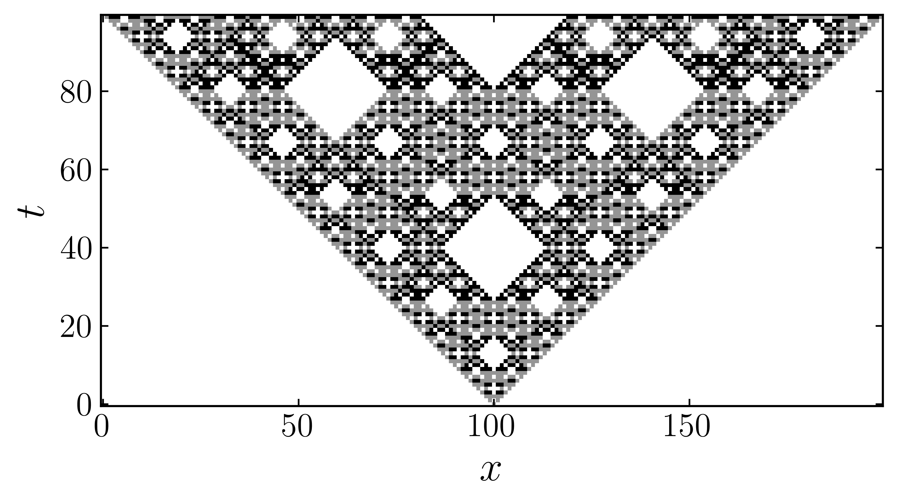
\begin{aligned} a_{x,t+1} &= -b_{x,t}\nonumber\\ b_{x,t+1} &= a_{x,t} + b_{x-1,t} + b_{x+1,t} \end{aligned} \mod q
\begin{aligned} a^R_{x,t} &= r_{x-t}, \qquad b^R_{x,t} = -r_{x-t-1}\,,\nonumber\\ a^L_{x,t} &= l_{x+t}, \qquad b^L_{x,t} = -l_{x+t+1} \end{aligned}
\begin{aligned} &\text{right moving: } Z_j X^{-1}_{j+1}\nonumber\\ &\text{left moving: } X^{-1}_{j}Z_{j+1} \end{aligned}
Z_j^n X^{-n}_{j+1} and X^{-n}_{j}Z^n_{j+1} are also right and left propagating solutions
2 sets of q independent gliders per site: complete operator basis
Implies a recurrence time of N, system size
“Vacuum” states a_{x,t}=-b_{x,t}=a\in\mathbb{Z}_q preserved, giving
\begin{aligned} \Psi_X(j)&\equiv\left(\prod_{k<j} Z_k X^{-1}_k\right) X^{-1}_j\qquad \text{to the right}\nonumber\\ \Psi_Z(j)&\equiv\left(\prod_{k<j} Z_k X^{-1}_k\right) Z_j\qquad \text{to the left} \end{aligned}
\begin{align*} Z_jX^{-1}_{j+1}=\Psi^{-1}_X(j)\Psi_X(j+1)\nonumber\\ Z_j^{-1}Z_{j+1}=\Psi^{-1}_Z(j)\Psi_Z(j+1) \end{align*} moving to the right and left respectively
Operator dynamics in Clifford cat maps
Entanglement growth
Long-range entanglement generation
\ket{z_1}_Z\ket{x_2}_X\cdots \ket{z_{N-1}}_Z\ket{x_{N}}_X \,,\quad\qquad z_{2j-1}, x_{2j} \in\mathbb{Z}_q
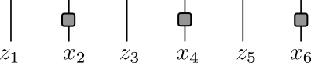
\ket{z_1}_X\ket{-x_2-z_1-z_3}_Z\cdots \ket{z_{N-1}}_X\ket{-x_N-z_{N-1}-z_1}_Z
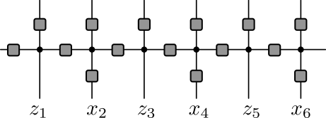
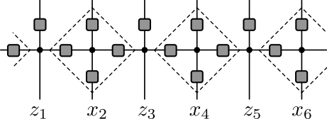
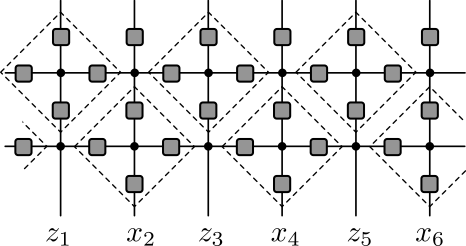
For ZZZZ\cdots or XXXX\cdots Bertini et al. (2019) found maximal entanglement growth
After T\geq 1 time steps, RDM of semi-infinite \rho_A has q^{T-1} eigenvalues equal to q^{-T+1}, with remainder zero
Rényi entanglement entropies obey
S_A^{(\alpha)}(T) \equiv \frac{1}{1-\alpha} \log\operatorname{tr}\left[\rho_A^\alpha\right] = (T-1) \log q
\begin{aligned} &\ket{z_1}_Z\ket{z_2}_Z\cdots \ket{z_{N-1}}_Z\ket{z_{N}}_Z \nonumber\\ &\qquad= \frac{1}{q^{N/2}}\sum_{x_2,x_4,\ldots x_N}\omega^{-z_2x_2-z_4x_4-\cdots z_N x_N}\ket{z_1}_Z\ket{x_2}_X\cdots \ket{z_{N-1}}_Z\ket{x_{N}}_X \end{aligned}
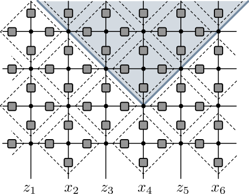
Sum over x_{2j} contributes entanglement between two regions intersecting light cone
For semi-infinite, T-1 indices appear in both halves
Rule 150R dynamics is bijective, so every term gives rise to a distinct state
All coefficients have same magnitude, so entanglement entropies are maximal and equal to (T-1)\log q
More generally: weight each state \ket{x}_X with c_x satisfying \sum_{x=0}^{q-1} |c_x|^2=1
Same argument gives von Neumann entanglement entropy
S_A^{(\alpha)}(T)= -T \sum_{x=0}^{q-1} |c_x|^2\log |c_x|^2
Allows rate of entanglement growth (entanglement velocity) to be tuned from zero to the maximal value (T-1)\log q
c.f. maximal entanglement growth for almost all dual unitary circuits1
Presumably a member of a set of exceptions of measure zero
Operator dynamics in Clifford cat maps
Entanglement growth
Long-range entanglement generation
H_1 = \sum_{j=1}^{2N-1} Z_j^2 Z_{j+1} + Z_{j}Z_{j+1}^2, \qquad H_{2} = \sum_{j=1}^{2N} \left(X_j+X_j^2\right)
U_{\text{row}} = e^{-i H_1 T_1}, \qquad U_{\text{vert}} = e^{-i H_2 T_2}
\begin{aligned} u_{\text{H}}(z_i,z_j) = e^{i\frac{4\pi}{9}} K_3^{\dagger}(z_i,z_j), \qquad u_{\text{V}}(z_i,z_j) = -i\frac{e^{i\frac{4\pi}{9}}}{\sqrt{3}}K_3(z_i,z_j) \end{aligned}
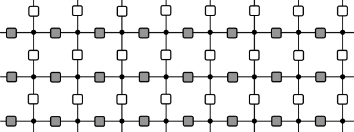
Prepare initial product state \ket{\psi(t=0)} = \otimes_{j=1}^{2N} \ket{+}_j where \ket{+} = \frac{1}{\sqrt{q}}\sum_{a=1}^q \ket{a}
Evolve for N steps with no u_\text{H} between sites N and N+1
[U_{\text{vert}}\tilde{U}_{\text{row}}]^N\ket{\psi(t=0)},
\braket{z_{1:2N}|\tilde{U}_{\text{row}}|z_{1:2N,t}} = \prod_{j=1}^{N-1} u_\text{H}(z_{j,t},z_{j+1,t})\prod_{j=N+1}^{2N-1} u_\text{H}(z_{j,t},z_{j+1,t})
\begin{aligned} \ket{\psi_{\text{final}}} = [U_{\text{vert}}U_{\text{row}}]^{\dagger N}[U_{\text{vert}}\tilde{U}_{\text{row}}]^N\ket{\psi(t=0)} \end{aligned}
\begin{align*} \ket{\psi_{\text{final}}} = \bigotimes_{j=1}^N \ket{\psi_K}_{N-j-1,N+j}, \qquad \ket{\psi_K} = \frac{1}{\sqrt{q}}\sum_{a,b=1}^q u_{\text{H}}(a,b)\ket{a}\otimes\ket{b} \end{align*}
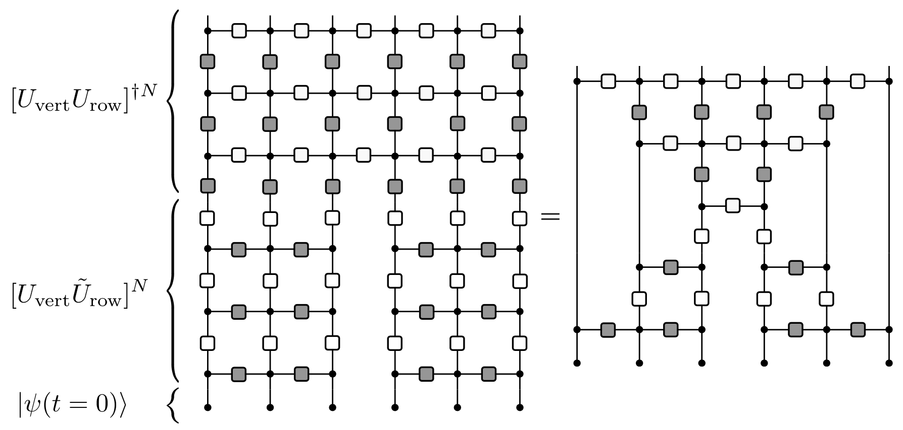
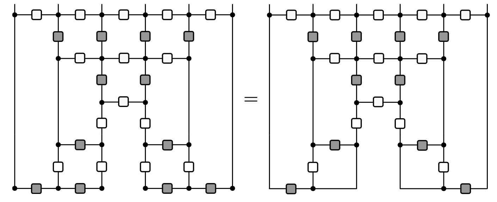
Using u_{\textrm{H}}^{\vphantom{\dagger}}= u_{\textrm{V}}^\dagger
Then use u_{\textrm{H}}(a,b)u_{\textrm{V}}(a,b)=|u_\textrm{H}(a,b)|^2=1
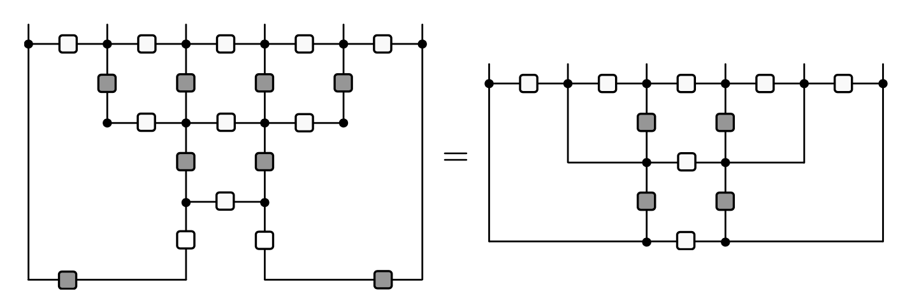
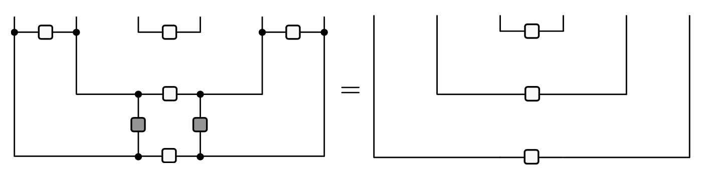
\ket{\psi_{\text{final}}} =\bigotimes_{j=1}^N \left(\frac{1}{\sqrt{q}}\sum_{a,b=1}^q u_{\text{H}}(a,b)\ket{a}_{N-j-1}\ket{b}_{N+j}\right)
THANK YOU!
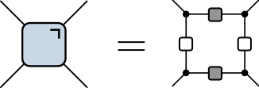
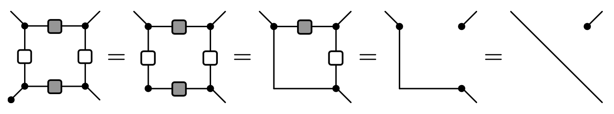
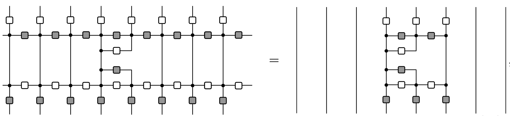
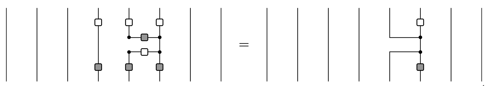
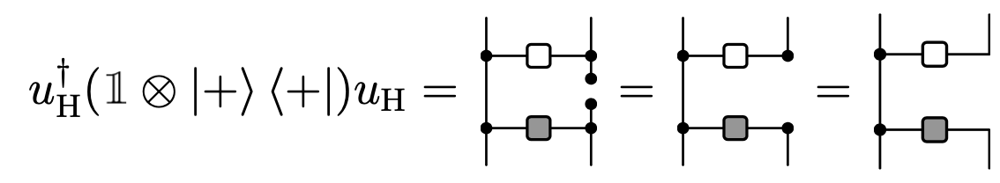